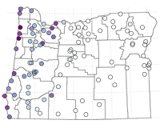

GEOG 4/595: Spring 2020, Nominal Class Time 2:00-3:50 T&Th
Course overview: Phenomena describable by multiple variables arise in many subfields of physical and human geography and related disciplines. The focus of this course is on the analysis and display of multivariate geographical data by traditional multivariate “machine-learning” methods and by newer methods of scientific visualization. The R data-analysis and computing environment will be used.
Course materials: (See pull-down menus above.)
Department of Geography, University of Oregon – [https://pjbartlein.github.io/GeogDataAnalysis/index.html]